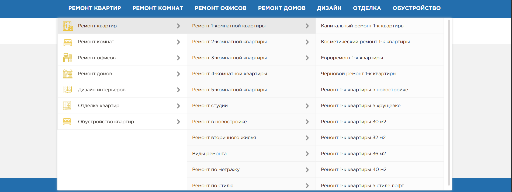
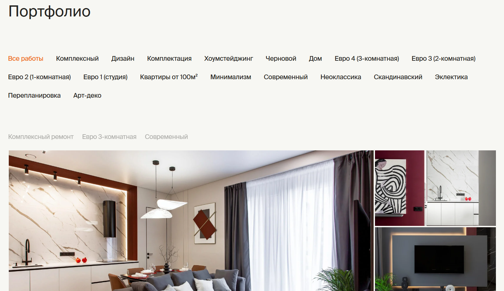
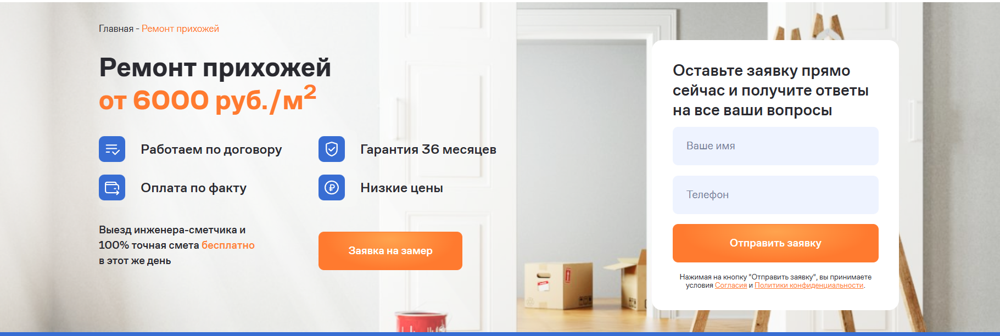
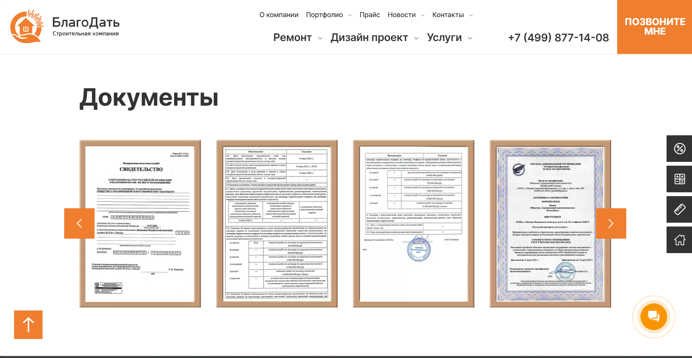
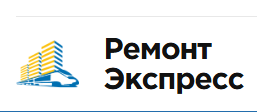
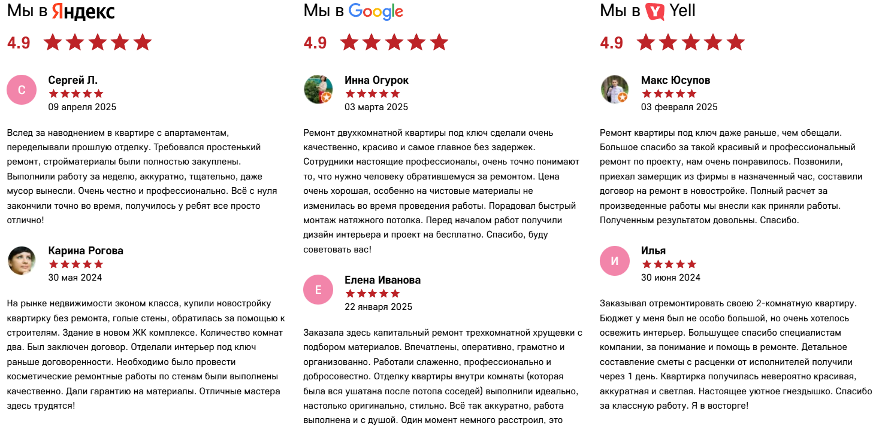
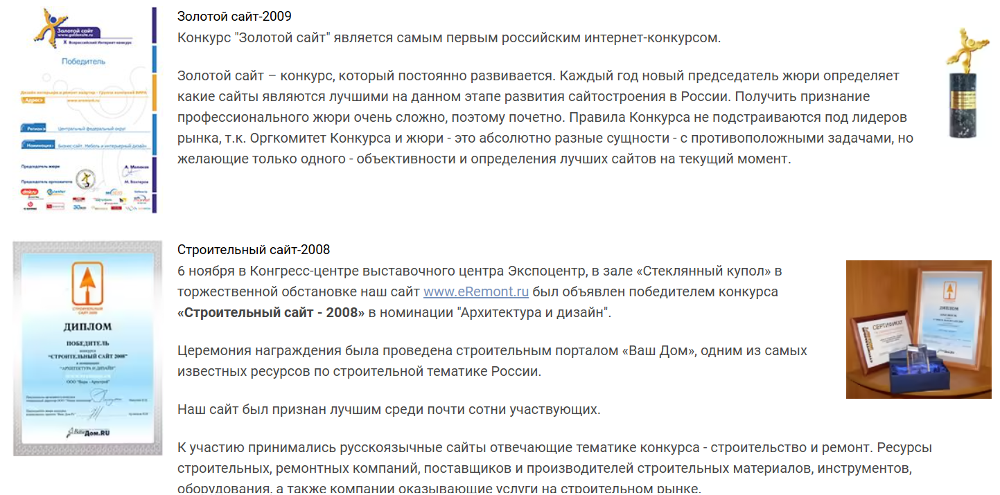
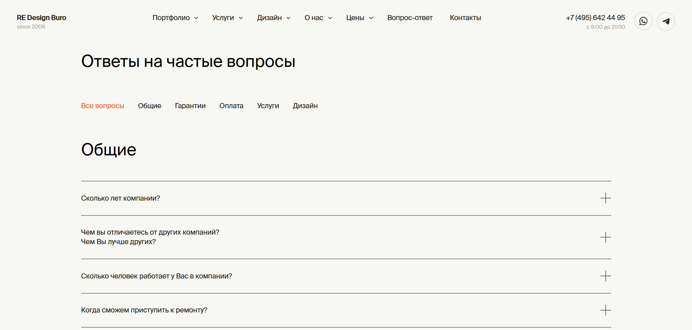
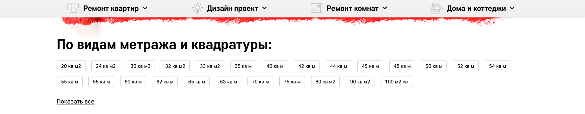
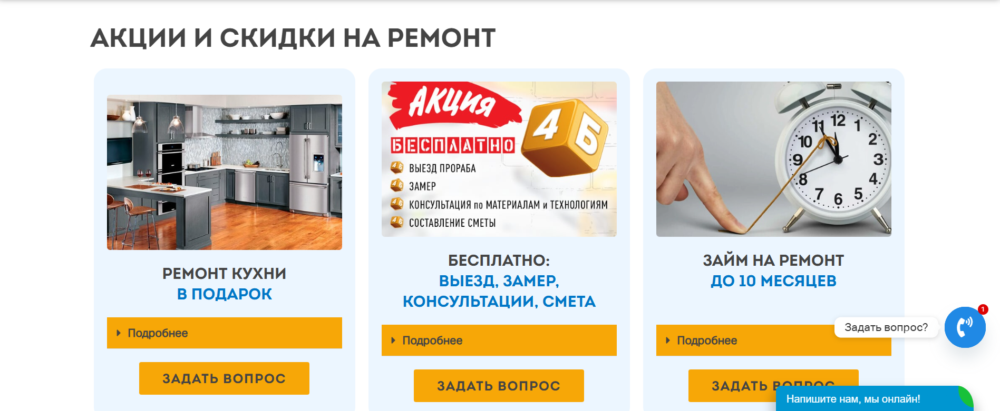

Аудит содержания сайта idearemonta24.ru

Анализ конкурентов направлен на выявление типов контента и функционала, необходимого для успешного ранжирования сайта в поисковых системах. Для анализа использовались ведущие московские компании по ремонту квартир, так как качество их проектов значительно выше из-за высокой конкуренции в столице.
Аудит выявил значительные пробелы в содержании и структуре сайта idearemonta24.ru по сравнению с конкурентами из топ-10 выдачи. Внедрение рекомендаций позволит улучшить позиции в поиске и увеличить конверсию.
Содержание
SEO-составляющая:
- Главный экран (Hero-баннер)
- Меню услуг в 2-3 уровня
- Schema-разметка BreadcrumbList
- Страница услуги
- Портфолио работ
- Информационный раздел
- Дополнительные посадочные страницы
- Страницы под E-E-A-T
- Карта сайта
- Брендовое название и логотип
Маркетинговая составляющая:
- Блок "О компании"
- Рейтинги и награды
- Часто задаваемые вопросы (FAQ)
- Команда специалистов
- Перелинковка между страницами
- Дополнительные страницы для пользователей
- Контакты в социальных сетях
Выводы
SEO-составляющая
Главный экран (Hero-баннер)
Что не так: Простой баннер со слабым визуалом, отсутствием УТП и калькулятора.
Что делать: Создать современный hero-баннер с качественным фото/видео, добавить сильный заголовок с УТП, разместить калькулятор стоимости и яркие призывы к действию. Такой графический блок должен мотивировать пользователя при каждом посещении задержаться на сайте и еще раз просмотреть его.
Пример: stroilevel.ru
Приоритет: Высокий

Меню услуг в 2-3 уровня
Что не так: Одноуровневое меню без подкатегорий услуг.
Что делать: Внедрить многоуровневое меню с подкатегориями ремонта (косметический, капитальный, евроремонт, под ключ). Удобная навигация на сайте станет фундаментом, на котором будет строится весь пользовательский опыт и техническое SEO одновременно. Такое меню ускорит поиск нужной информации, формирует понятную структуру проекта, облегчение работы поисковых роботов, грамотно распределит ссылочного веса между разделами, построит логичный путь от первого клика до целевого действия.
Пример: remontexpress.ru
Приоритет: Высокий

Schema-разметка BreadcrumbList
Что не так: На сайте присутствуют визуальные хлебные крошки, но отсутствует Schema-разметка BreadcrumbList, что подтверждено Google Rich Results Test.
Что делать: Реализовать Schema разметку BreadcrumbList. Schema-разметка BreadcrumbList улучшает отображение в поисковой выдаче — хлебные крошки могут показываться вместо обычного URL, что повышает кликабельность. Также помогает поисковым системам лучше понимать структуру сайта.
Примеры: mir-rem.ru, sk-blagodat.ru, eremont.ru
Приоритет: Средний

Страница услуги
Что не так: Общие описания без структуры, отсутствие ключевых блоков.
Что делать: Структурировать контент по блокам: первый экран с УТП, преимущества, цены, этапы работы, портфолио, отзывы, FAQ.
Пример: remont-uroven.ru
Приоритет: Высокий

Портфолио работ
Что не так: Простая галерея без фильтрации и структуры.
Что делать: Создать фильтруемое портфолио с категориями, добавить сравнение "до/после", видео обзор, детальные описания проектов, фото исполнителей, ссылки на "Другие проекты".
Пример: rmexp.ru/portfolio
Приоритет: Высокий


Информационный раздел
Что не так: Полностью отсутствует информационный раздел или блог со статьями.
Что делать:
- Создать полноценный блог с SEO-статьями о ремонте
- Добавить категории: "Советы по ремонту", "Дизайн интерьера", "Материалы", "Технологии"
- Реализовать перелинковку между статьями и услугами
- Добавить поиск и фильтрацию по статьям
Это привлечет информационный трафик, улучшит поведенческие факторы, демонстрирует экспертность.
Пример: eremont.ru/articles
Приоритет: Средний

Дополнительные посадочные страницы
Что не так: Отсутствуют страницы под специфические запросы и узкотематические направления, которые активно используют конкуренты из топ-10.
Что делать: Создать страницы по темам:
- Типы помещений: ремонт прихожей, коридора, балкона, гардеробной
- Стили дизайна: скандинавский, лофт, минимализм, классика
- Технологии: умный дом, новейшее оборудование, экоматериалы
- Услуги: перепланировка, онлайн-трекер ремонта
Это значительно расширит семантическое ядро и охват аудитории, позиционирование как технологичной компании, решение конкретных проблем клиентов.
Примеры: mir-rem.ru, stroyremdizayn.ru, sknebo.ru
Приоритет: Средний


Страницы под E-E-A-T
Что не так: Недостаточно информации для подтверждения экспертности.
Что делать: Добавить разделы: лицензии и сертификаты, гарантии, политика конфиденциальности.
Пример: sk-blagodat.ru/about
Приоритет: Средний

Карта сайта
Что не так: Отсутствует HTML карта сайта для пользователей и поисковых систем.
Что делать:
- Создать полную HTML карту сайта со всеми разделами, услугами и статьями
- Разместить ссылку на карту сайта в футере
- Обеспечить регулярное обновление при добавлении новых страниц
Пример: lyapota.pro/sitemap
Приоритет: Средний

Брендовое название и логотип
Что не так: В логотипе используется ключевой запрос "Ремонт квартир в Москве" вместо брендового названия компании.
Что делать:
- Разработать брендовое название компании ("МосОблРемонт")
- Создать профессиональный логотип с брендовым названием
Бренд вызывает больше доверия, чем ключевой запрос. Легче запомнить и рекомендовать. Для SEO брендовые запросы в поиске повышают CTR и снижают отказы. Яндекс и Google лучше относятся к сайтам с уникальным брендом. Для бизнеса это возможность расширять услуги под узнаваемым именем.
Приоритет: Средний

Маркетинговая составляющая
Блок "О компании"
Что не так: Отсутствует полноценная страница о компании.
Что делать: Создать страницу с историей компании, ценностями, фото команды и офиса, видео-визитка о компании.
Пример: remont-otdelka.ru
Приоритет: Высокий

Рейтинги и награды
Что не так: Нет агрегации отзывов и демонстрации достижений.
Что делать: Добавить блок с рейтингами из Яндекс, Google, Отзовик, разместить сертификаты и награды.
Пример: remont-uroven.ru/reviews
Приоритет: Средний



Часто задаваемые вопросы (FAQ)
Что не так: Полностью отсутствует блок FAQ, хотя пользователи задают типовые вопросы о ремонте.
Что делать:
- Внедрить аккордеон с вопросами-ответами на страницы услуг
- Добавить Schema разметку FAQPage для расширенных сниппетов
Пример: rmexp.ru/vopros-otvet
Приоритет: Средний

Команда специалистов
Что не так: Минимальная информация о мастерах, отсутствие данных о прорабах, дизайнерах и руководстве.
Что делать:
- Расширить карточки существующих мастеров: добавить опыт работы (лет), ключевые навыки, специализацию по типам ремонта
- Создать карточки для недостающих специалистов: прорабов, дизайнеров интерьера, директора
- Добавить профессиональные фото команды в рабочей обстановке
- Внедрить перелинковку: связь специалистов с выполненными проектами в портфолио
Примеры: rmexp.ru/about, lyapota.pro
Приоритет: Высокий


Перелинковка между страницами
Что не так: Слабые связи между страницами сайта.
Что делать: Усилить перелинковку: в статьях ссылаться на услуги, в портфолио на технологии, в услугах на связанные услуги.
Пример: lyapota.pro
Приоритет: Средний


Дополнительные страницы для пользователей
Что не так: Отсутствуют страницы повышающие доверие.
Что делать: Добавить разделы: акции, рассрочка, вакансии. Многие клиенты ищут выгодные предложения, рассрочка увеличит конверсию, поиск специалистов может говорить о росте компании.
Пример: remont-otdelka.ru
Приоритет: Низкий

Контакты в социальных сетях
Что не так: Ссылки на социальные сети отсутствуют.
Что делать:
- Добавить иконки социальных сетей в шапку сайта (рядом с телефоном)
- Продублировать блок соцсетей в футере
- Включить основные платформы: Rutube, VK, YouTube, Telegram
Пример: remakademiya.ru
Приоритет: Средний


Выводы
По результатам анализа конкурентов выявлены пробелы в содержании сайта idearemonta24.ru. Основной приоритет необходимо отдать развитию качества контента на страницах услуг и созданию недостающих структурных элементов.
Важные задачи (высокий приоритет):
- Переработка главного экрана с добавлением калькулятора
- Внедрение многоуровневого меню услуг
- Создание Schema-разметки
- Структурирование страниц услуг
- Создание фильтруемого портфолио
- Разработка страницы "О компании"
- Добавление страницы команды специалистов
Средний приоритет:
- Развитие информационного раздела
- Создание дополнительных посадочных страниц
- Внедрение блока FAQ
- Добавление рейтингов и сертификатов
- Усиление перелинковки
- Добавление соцсетей
Результат внедрения: Увеличение видимости в поиске на 40-60%, рост конверсии на 25-35%, улучшение поведенческих факторов и доверия пользователей.